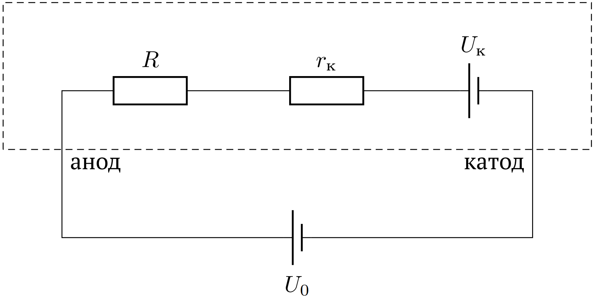
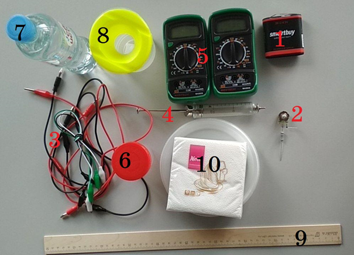
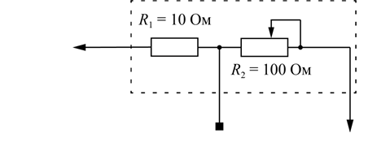

W21 (2021) — English translation
The dependence of current on voltage (volt-ampere characteristic, CVC) in salt solutions does not obey Ohm’s law. This occurs due to chemical processes occurring at the metal contacts (cathode and anode) immersed in the solution to connect it to the electrical circuit. A possible option for modeling the electrical properties of such a system is shown in Fig. 1. The contact potential difference $U_\text{к}$ that appears on the electrodes is switched on to meet the external voltage $U_0$. The presence of a constant contact resistance $r_\text{к}$ is due to the mechanisms of current transfer directly in the contact areas and is not related to the resistance of the solution volume, which is shown in Fig. 1 is represented by a resistor of value $R$.

In this work, there is no need to estimate errors! For the three percent (by weight) solution of $\mathrm{NaCl}$ in water provided to you:
Reference data Molar mass $\mathrm{NaCl}$: $58,4~г/моль$. Elemental charge: $1,6\cdot 10^{-19}~\text{Кл}$. Avogadro's number: $6,02\cdot 10^{23}~моль^\text{-1}$. The density of the solution is considered equal to $\rho = 1~г/cm^3$.
Notes 1. The performance of the multimeter in ammeter mode is NOT GUARANTEED! 2. Specific conductivity $\sigma$ is the reciprocal of resistivity $\rho$. 3. The mobility $\mu$ of electric charge carriers in a conductor is the proportionality coefficient between the electric field strength $E$ and the carrier drift speed $v=\mu E$. 4. Consider the electric field inside the syringe to be uniform. 5. The mobilities of sodium ions and chlorine ions at a given solution concentration can be approximately considered the same. 6. Connect the positive pole of the voltage source to the syringe piston, and the negative pole to the needle cone. 7. When passing current through a solution in a syringe, place the latter horizontally and try to avoid contact of the gas bubble formed inside with the electrodes (the bubble should be located in the middle between the electrodes). 8. Carry out each new series of measurements using a fresh salt solution. 9. Take measurements for each portion of the solution quickly enough, avoiding the formation of a large amount of gas in the volume. 10. For calculations $\sigma$ and $R$, use the internal cross-sectional area of the syringe $S$, despite the fact that the area of the electrode connected to the needle cone is significantly less than $S$. 11. Place a repeatedly folded napkin under the open needle cone of the syringe. 12. Carry out all operations with liquid over a plastic plate so as not to stain tables and your own clothes with the salt remaining after the solution has dried.

1. 4.5V battery. 2. Voltage regulation and measurement unit with three terminals, the diagram of which is shown in Figure 3 (). 3. Connecting wires. (three - crocodile-crocodile, four - crocodile-plug). 4. Glass syringe with a metal piston and needle cone. 5. Multimeters (2 pcs.). 6. A glass with a three percent salt solution. 7. A bottle of clean water (for washing the syringe). 8. An empty glass for draining the used solution. 9. Ruler. 10. Napkins and a plastic plate to keep your work area clean. 11. Graph paper (2 sheets).

Source: https://pho.rs/p/78